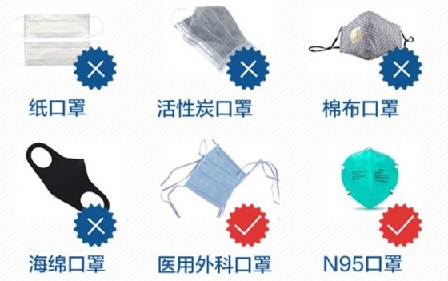
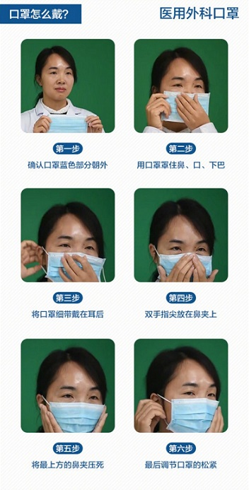
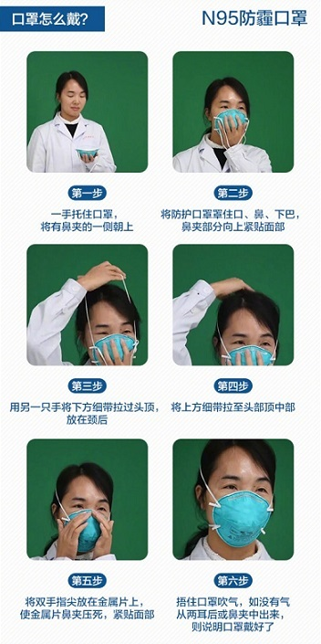

科学佩戴口罩指南
科学佩戴口罩，对于新冠肺炎、流感等呼吸道传染病具有预防保护作用，能有效防止病毒传播，所以在日常的生活、学习与工作中我们要做到科学佩戴口罩以发挥它的最大价值，以下则是口罩佩戴的注意事项。
一、口罩佩戴场景
（一）去医院看病和乘坐交通工具时。
（二）呼吸道传染病高发时期，需要在相对密闭或人多的空间中停留较长时间。
（三）一个办公室或学校教室内，有人感冒时。
（四）与呼吸道疾病患者近距离接触时。
二、口罩的选择

三、口罩佩戴的正确操作
 
五、使用注意事项
（一）佩戴前、脱除后应洗手。
（二）佩戴过程中避免用手触摸口罩内外侧，应通过摘取两端线绳脱去口罩。
（三）佩戴多个口罩不能有效增加防护效果，反而增加呼吸阻力，并可能破坏密合性。
（四）各种对口罩的清洗、消毒等措施均无证据证明其有效性。
（五）一次性使用医用口罩和医用外科口罩均为限次使用，累计使用不超过8小时。职业暴露人员使用口罩不超过4小时，不可重复使用。